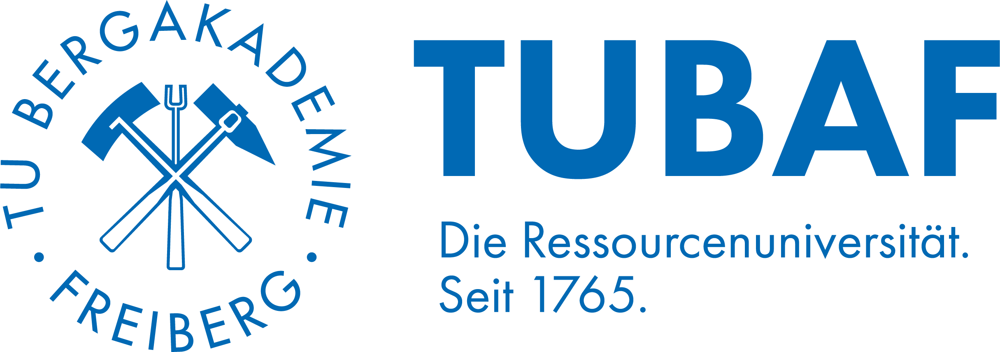
Prof. Dr.-Ing. Sebastian ZugQR-Code scannen – oder einfach die Hand heben.
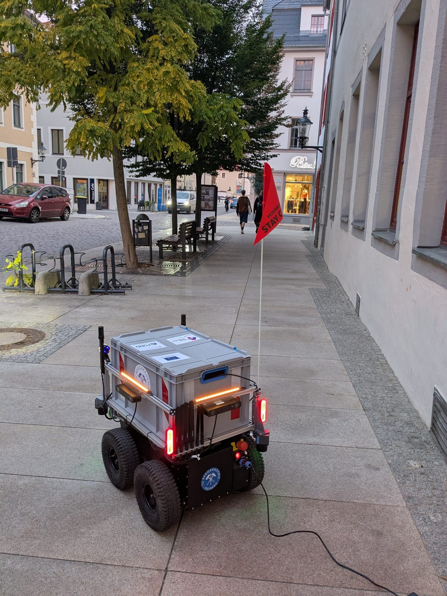
Freiberg, Burgstraße · 07:14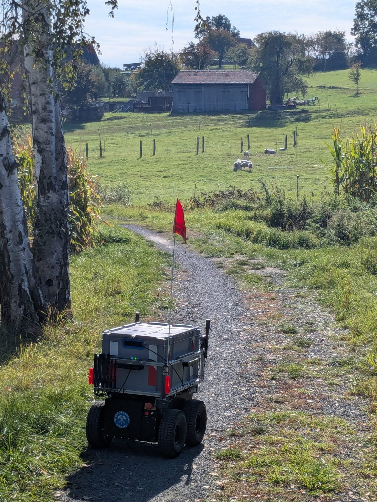
km 9,6 · 11:45Gras ist kein Hindernis – der Roboter muss das erst lernen.
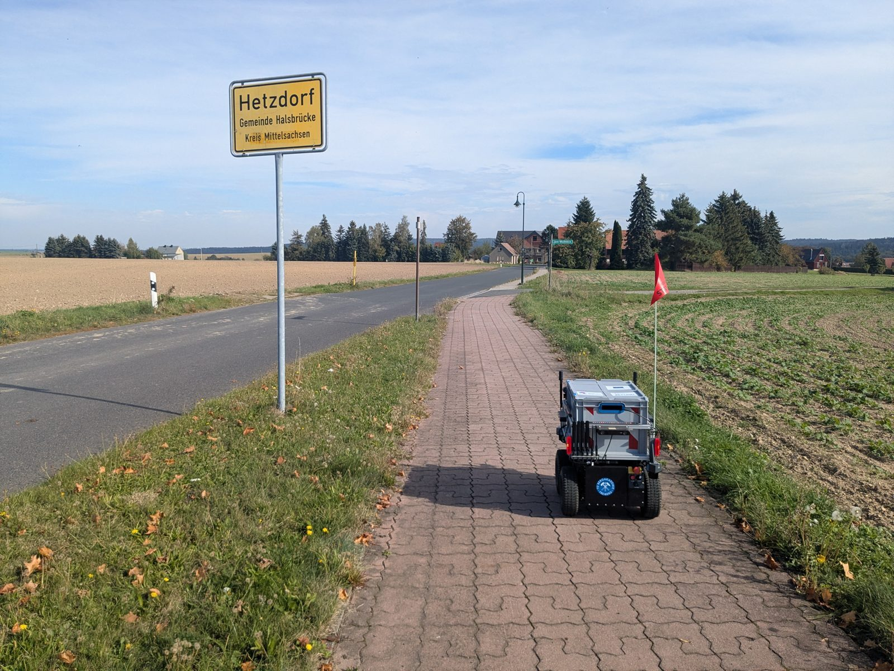
Ortseingang Hetzdorf · km 11,5Jedes Ortsschild: eine neue Behörde.
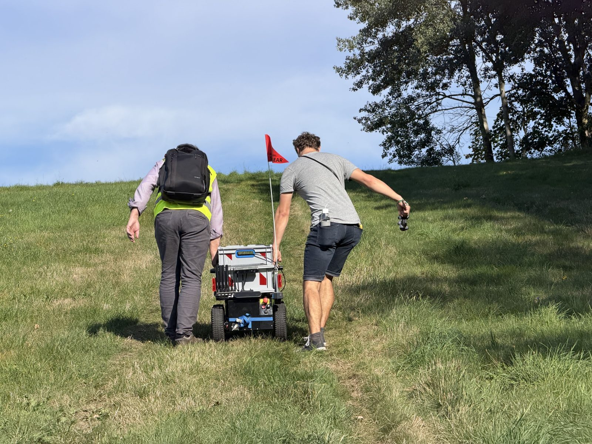
km 17,2 · bergaufLokalisierung in 3D, Pfadregelung in 2D.
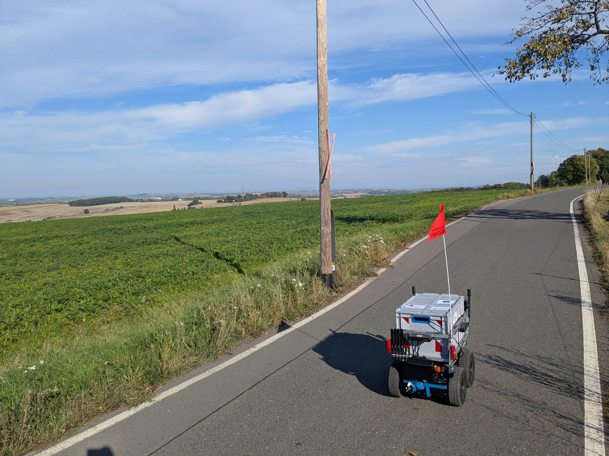
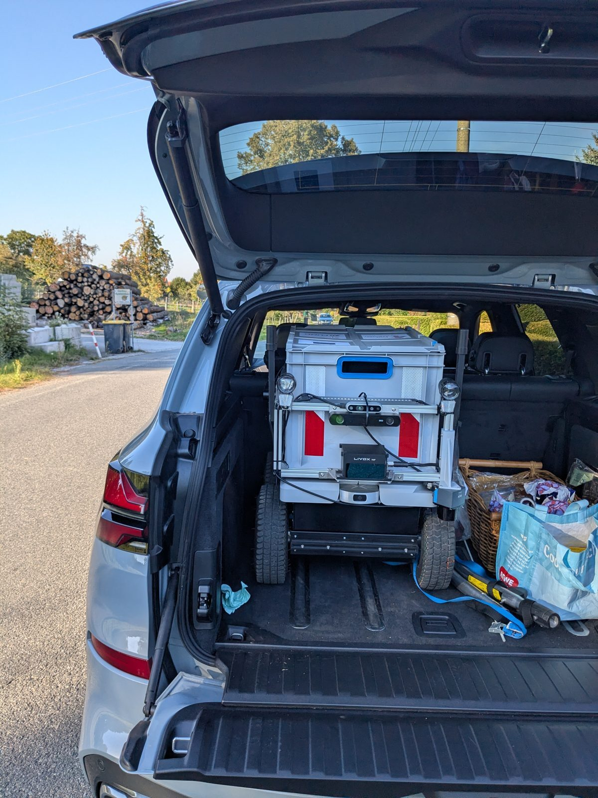
km 18,7 – 21,2Außerorts oft weder Fuß- noch Radweg.
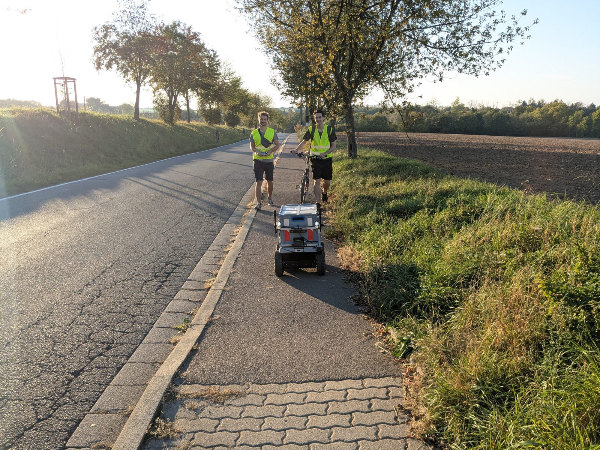
Dresden-Pennrich · km 31,411½ Stunden, vier Menschen, verteiltes Wissen.
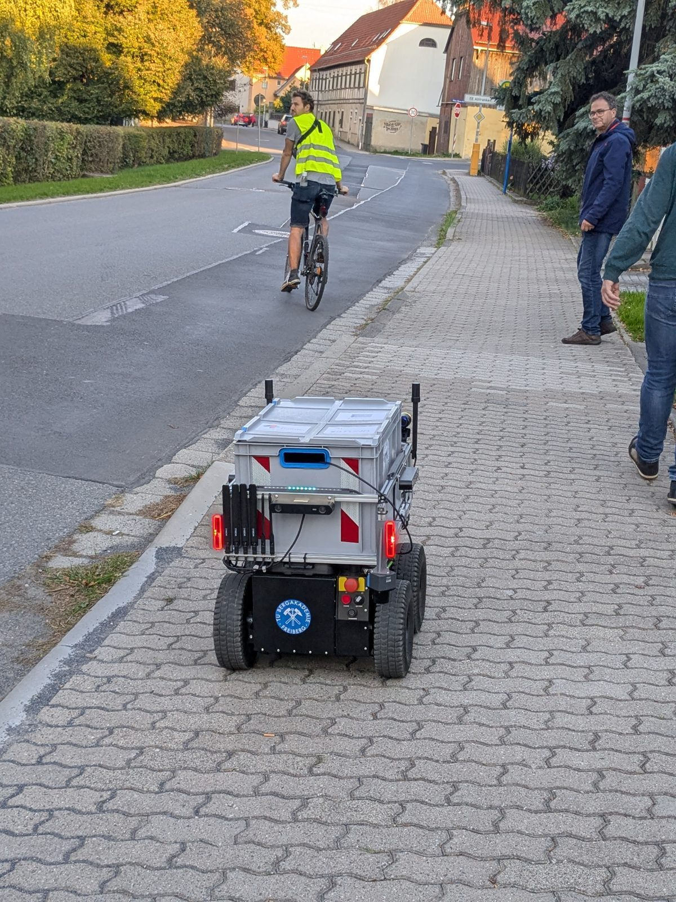
Gehweg mit Radverkehr · km 32Den Gehweg teilen wir mit Fuß- und Radverkehr.
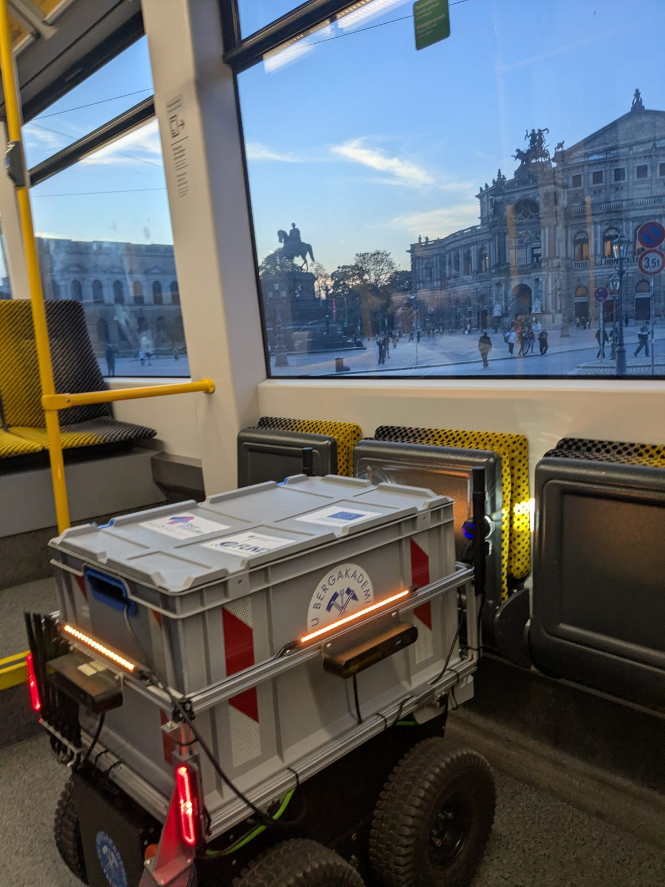
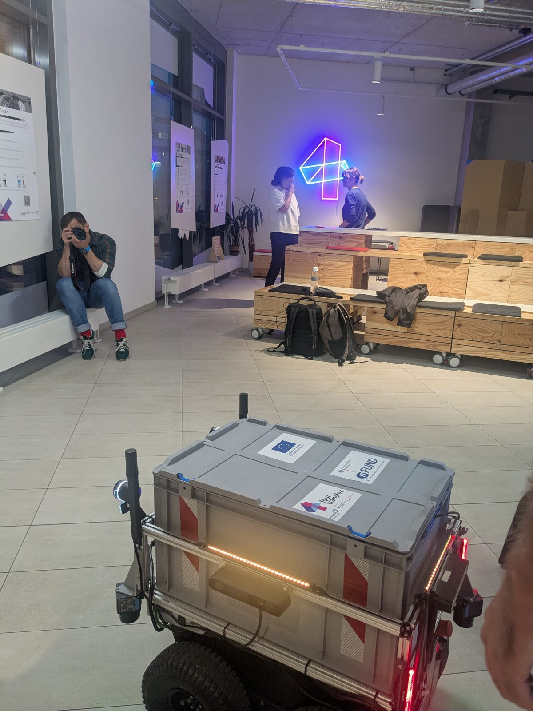
Linie 7 · 4transferLab 18:50Letzte Etappe mit der Straßenbahn, vorbei an der Semperoper.
Karte, alle 60 Fotos und Erkenntnisse der Reise:
sebastianzug.github.io/RoseesRoboterReise
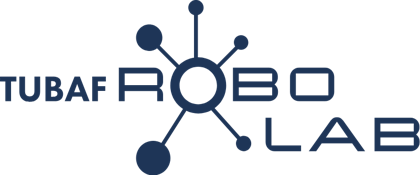
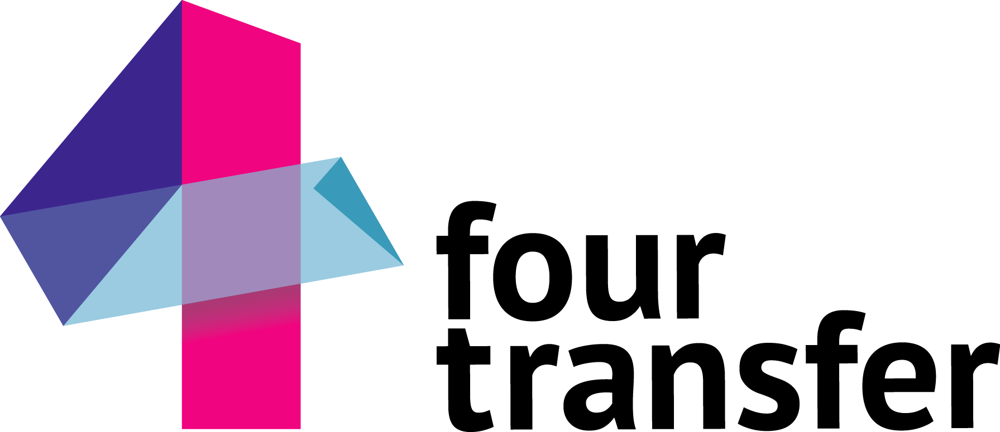